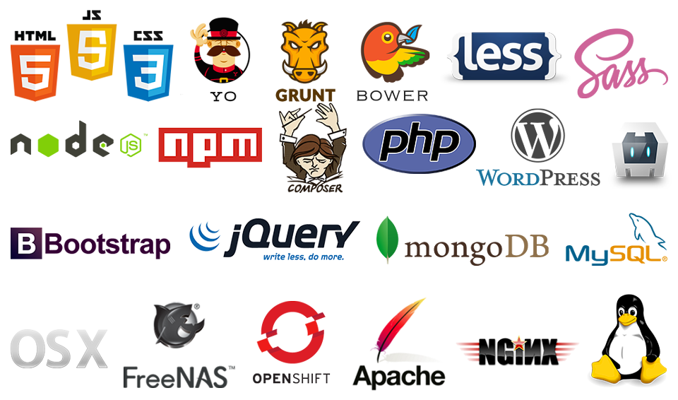

Education
- That University
- BS in Some Field (10 - 14)
- Another University
- Bachelor of Bussing Tables (14 - 16)
Experience
- Apple
- Apprenticeship (10 - 12)
- Google
- Chief Apple Diplomat Within Google HQ (13 - 14)
- GitHub
- Open Source Contributions (09 - present)
Tools
Knowledge
